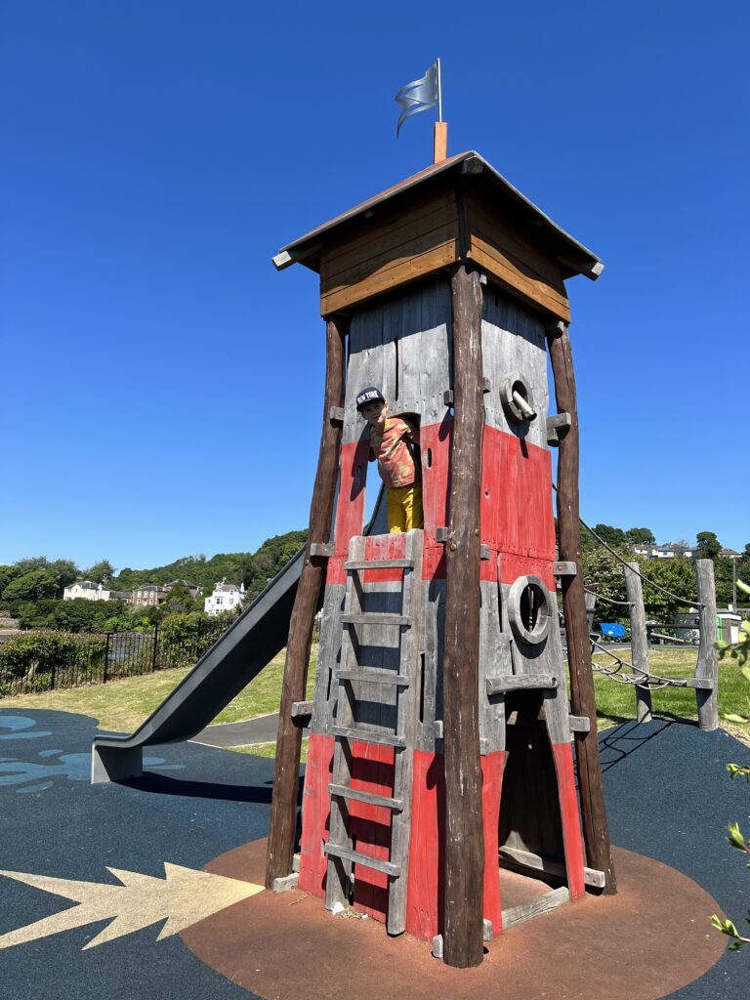

The playpark at Fife Farmpark is a fun and exciting area where children can play and enjoy the outdoors. It has swings, slides, climbing frames, and a large sandpit, providing plenty of activities for children of different ages. The playpark is surrounded by grassy fields, making it a great place for families to relax while children play. It has been a favourite part of the farmpark since it opened in 2003.
